Anthropic 40 万次会话研究：用好 AI 编程的关键不是会写代码
大家好，我是小林。
不知道你们有没有好奇过一件事，同样是用 Claude Code，为什么有的人用得跟开了挂一样，一句话甩过去一大堆活就干完了？有的人却天天骂它笨、不听话、净帮倒忙？
我一直以为，差距就在会不会写代码上。会写的人指挥得动，不会写的人当然玩不转。
直到 Anthropic 在 6 月中旬甩出一份研究，把它自己 40 万次 Claude Code 真实会话全捞出来分析了一遍。
看完我愣了一下，因为结论跟大多数人的直觉是反着的：决定你用不用得好 AI 编程的，根本不是你会不会写代码。
这份研究的名字叫《Agentic coding and persistent returns to expertise》，是前段时间发的，说人话就是「用 agent 写代码，专业度的回报一直都在」。
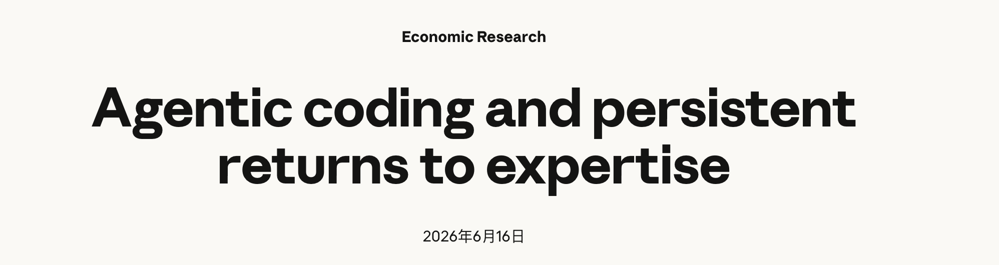
有意思的是样本不是几十个人的小调研，是大约 23.5 万个用户、40 万次真实会话，时间跨度从 2025 年 10 月一直到 2026 年 4 月。
这个体量意味着什么？意味着它说的不是某个大佬的个人感受，而是几十万人用下来沉淀出的统计规律。
我把里面最戳人的几个发现挑出来，跟你聊聊。
会写代码这条护城河，还守得住吗？
先说一个这份研究里最核心的框架，它几乎决定了你怎么理解后面所有数据。
Anthropic 发现，人和 agent 的活，是自然分工的：人主要决定「做什么」，agent 主要决定「怎么做」。
具体到数字上，用户握着大约 70% 的规划类决策，比如这个功能要解决什么问题、做成什么样；而 Claude 握着大约 80% 的执行类决策，比如具体用哪个函数、代码怎么落地。
你品一下这个分工。「怎么写」这部分，本来是程序员最值钱的硬功夫，现在大头被 agent 接走了。那剩下「做什么」这部分，靠的是什么？是你对这件事本身的理解，跟你会不会敲代码，关系没那么大了。
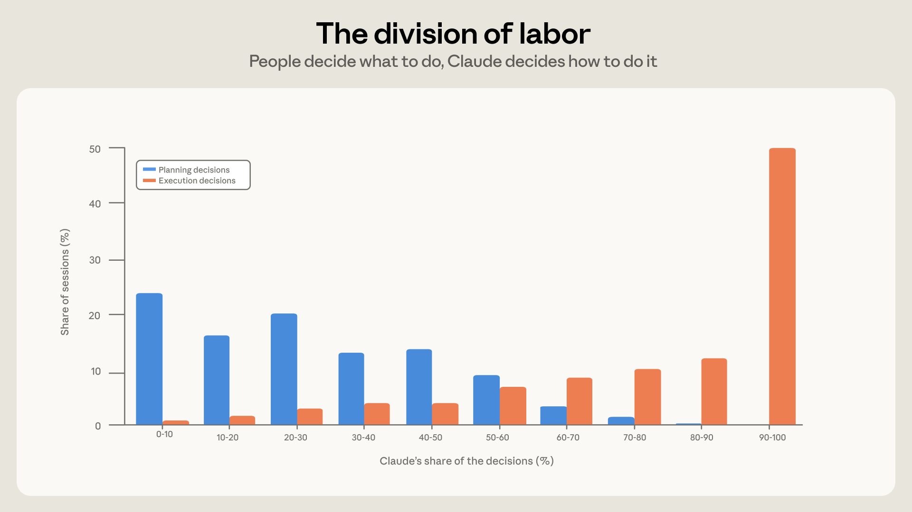
上面这张是研究里的原图，横轴是规划决策、纵轴是执行决策，能看出人主要占着规划那一头，执行基本让给了 Claude。
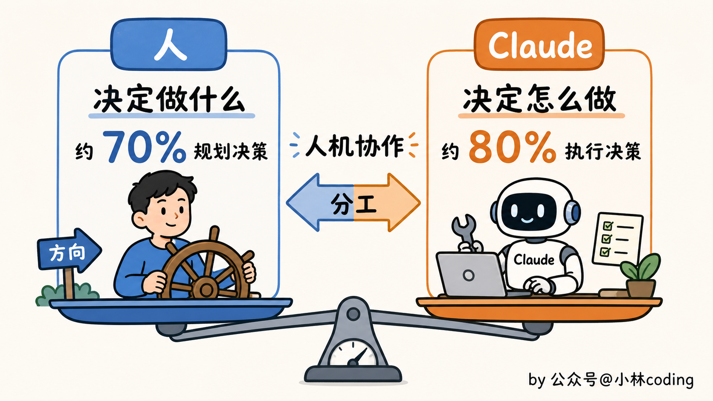
光讲框架你可能还半信半疑，那看一组更扎心的数据。
研究把用户按职业分了类，然后比成功率。结果在那些真正产出了代码的会话里，软件工程师的成功率是 34%，其他职业是 29%。
你没看错，就差 5 个点。
更狠的是，数据集里最大的十个职业，成功率全部落在软件工程师 7 个点以内。
管理岗、销售、法务这些听起来跟编程八竿子打不着的人，照样把活干成了。甚至管理类的成功率，是所有职业里最高的。
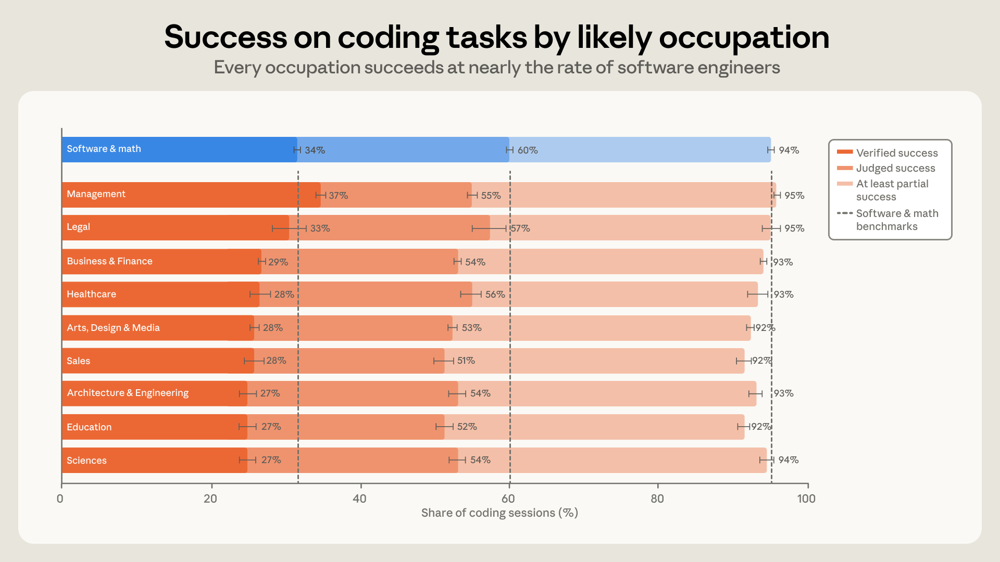
上面是研究原图，十个最大职业群体的成功率对比，你看那一排柱子高度，几乎是齐的，软件工程师并没甩开谁多少。
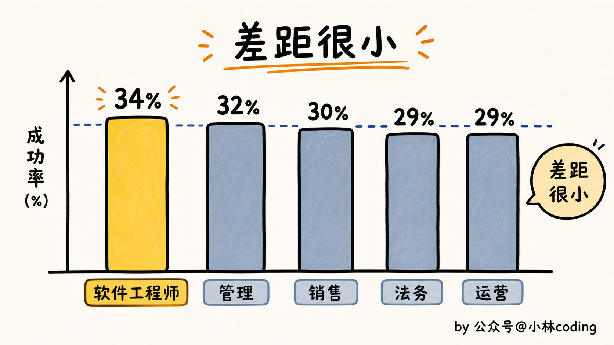
这说明啥？说明「会写代码」这张入场券，正在贬值。
放在三年前，你不懂语法、不会调试，基本就是被挡在门外。
现在不一样了，agent 帮你把语法和调试这层壁垒抹平了，大家几乎是站在同一条起跑线上。
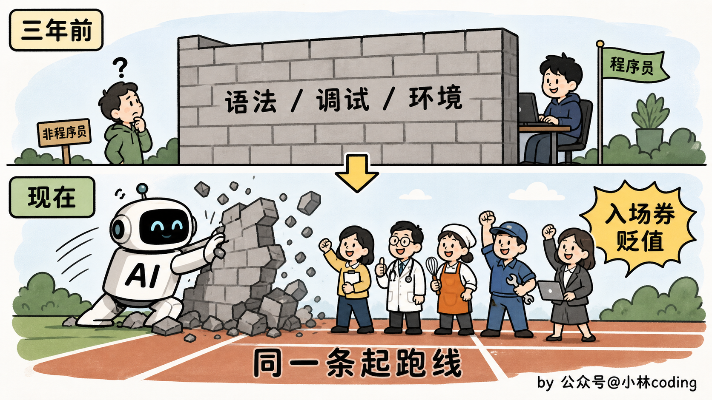
Anthropic 自己有句话总结得特别到位：编码背景，正变得越来越不能决定编程的成败。
那到底是什么在拉开差距？
那问题就来了。既然大家起跑线差不多，为什么有人用 Claude Code 跟开了挂一样，有人却总觉得它笨、不听话、净帮倒忙？
研究给了一个特别具体的答案，差距就藏在你发出去的每一条 prompt 里。
它把用户分成新手、中级、专家，然后看同样一句话，能让 Claude 干多少活。
结果新手发一条 prompt，平均撬动 Claude 做 5 个动作、吐出 600 字；而专家同样发一条，能撬动 12 个动作、3200 字。
动作差了 2.4 倍，产出差了 5 倍。
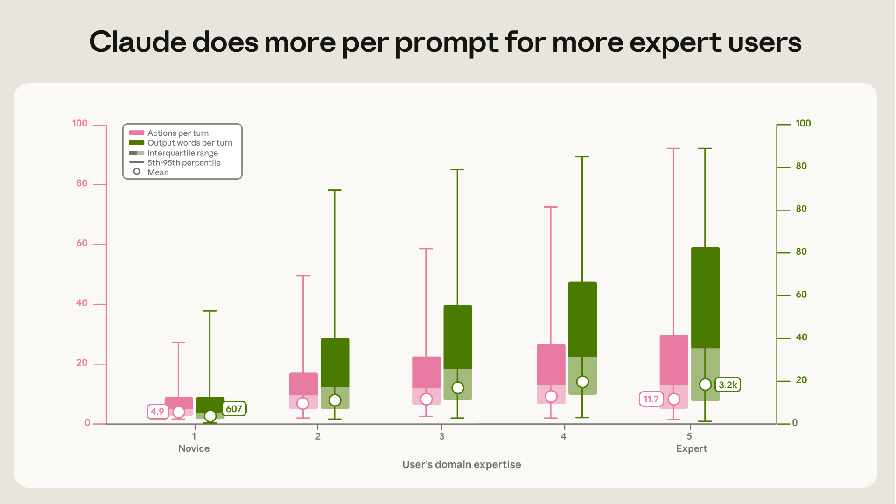
上面是研究原图：从新手到专家，每条 prompt 撬动的动作数和产出字数一路往上抬，专家那一档明显高出一截。
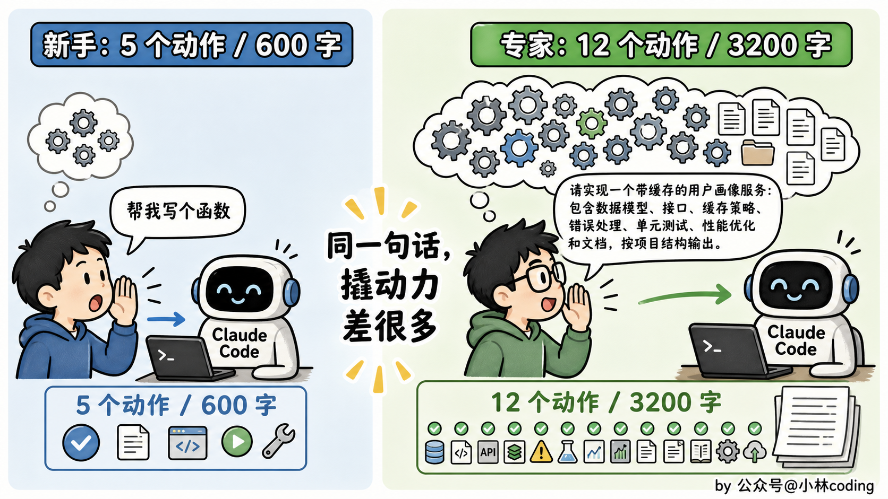
这个差距怎么来的？说穿了，就是你会不会「派活」。
这事别以为只跟外行有关，哪怕把范围缩到程序员内部，规律照样成立。我举个后端最熟的例子。
一个后端要做秒杀扣库存。没踩过坑的人会怎么发指令？
大概一句：「帮我写个扣库存的接口。」Claude 也就老老实实给你来一段 update set stock = stock - 1 where id = ?，本地一跑、单线程一测，还真没毛病。这就是那「5 个动作」级别的活。
换一个被高并发毒打过的老手，他会这么说：「做秒杀扣库存，直接 update 会超卖，改成 Redis 预扣加 Lua 脚本保证原子性，扣成功再异步落库做最终一致；这个商品是热点 key，前面挂个限流别让请求全砸到 Redis；Lua 里记得判断库存够了才扣。」
一句话甩过去，Claude 噼里啪啦把 Lua 脚本、预扣逻辑、异步落库、限流一整套全给你搭出来。这就是那「12 个动作」。
你看这两条 prompt 的差别，跟会不会写 Java 语法一点关系都没有，两个人都会写那句 update。
差的是后者懂「高并发下直接 update 会超卖」「热点 key 得防击穿」「扣减要做最终一致」。
这些是架构经验，是对这套交易系统的理解，也就是这个领域里的专业度。它直接决定了你一句话能从 Claude 手里榨出多少东西。
说白了，Claude 就是个能力爆表、但需要你指方向的下属。
你越懂这套系统的门道，越能把要干啥说到点子上，它就越能放开手脚替你干。
你自己都没意识到坑在哪，它再聪明，也只能陪你把那段会超卖的代码写得工工整整。
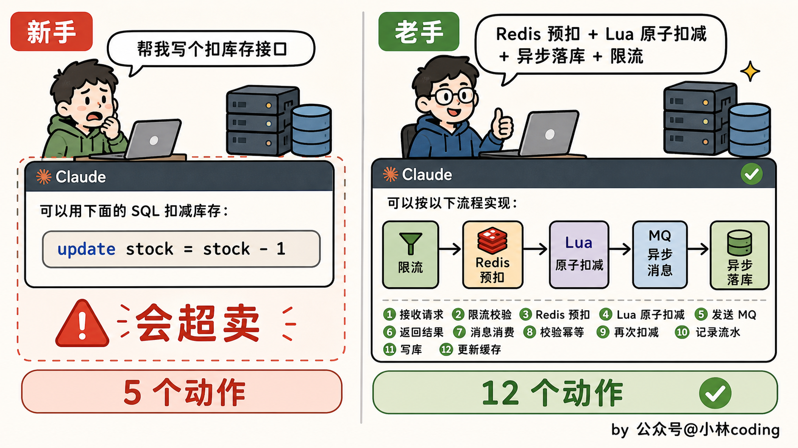
而「懂行」更值钱的地方，是在翻车的时候。
研究里有个数字我印象特别深：一个会话遇到了麻烦、卡住了，新手有 19% 的概率直接放弃，而中级和专家放弃的概率只有 5% 到 7%。
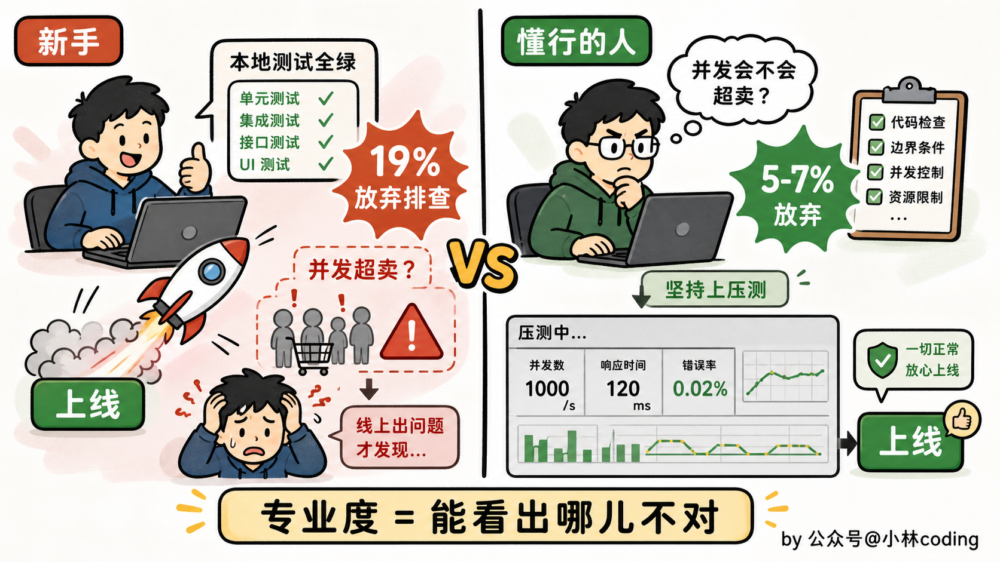
还拿刚才那个秒杀扣库存说。
假设 Claude 给你写了一版，本地一测、单线程压一压，全是绿的。
懂行的人压根不会信，他知道这东西的坑只在并发下才露头，于是上来就追一句：「这个一千个线程同时抢的时候会不会超卖？先上压测。」
一压，果然扣成负数了。换成没经验的人呢？看本地跑得好好的，直接就上线，等到真秒杀那天库存超卖几百单、赔钱赔到老板找上门，才知道闯了大祸。
专家不是不犯错，AI 也一样会瞎写。
区别在于，懂行的人一眼能看出哪儿不对、知道往哪个方向救；不懂的人面对一段「看着没毛病、一上量就炸」的代码，根本察觉不到。
所以你看，真正的护城河从来不是你能不能跟 AI 把话说得多漂亮，而是这两样：你能不能把它引导到对的方向，以及它给出的东西，你看不看得出对错。
这两样，靠的全是领域专业度，不是编码能力。
那得先修炼成专家才行吗？
讲到这儿，可能有人又开始焦虑了：那我得修炼成行业专家才能吃上这碗饭？
恰恰相反。这份研究里我觉得最让人松一口气的，就是这一点。
它把成功率按水平拉了一条曲线：新手 15%，到了中级直接跳到 28%，再到专家是 33%。
你盯着这三个数看一眼就明白了，最大的那一跳，是从新手到中级。从中级再往专家爬，曲线一下就平了，只多了 5 个点。
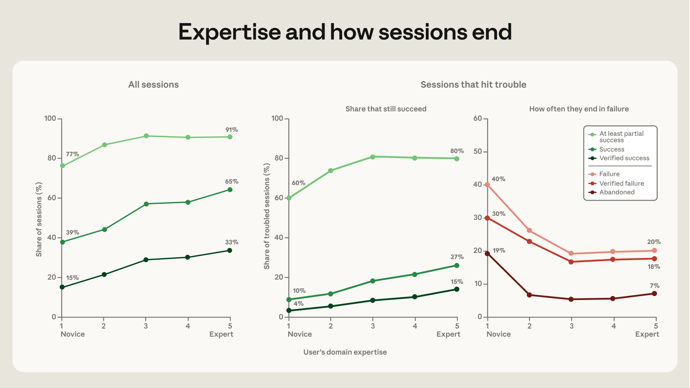
上面是研究原图：成功率随专业度上升的曲线，前半段（新手到中级）陡，后半段（中级到专家）就平了，前面提到的「卡住后放弃的概率」也在这张图里。
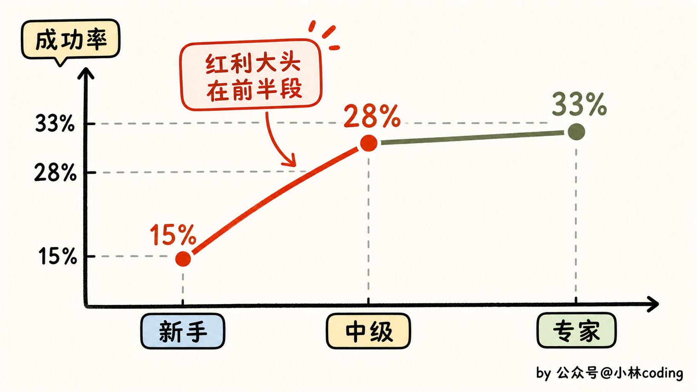
Anthropic 的原话是，对一个领域有个「够用的把握」，就能拿走大部分收益，深度专精也只是再多加那么一点点。
翻译成人话就是：及格线特别低。
你不需要是干了二十年的行业老炮。你只要对手上这件事有个像样的理解，知道一件正常的活该长什么样、哪些是关键、做出来对不对，你就已经跨过了那道收益最大的坎，把绝大部分红利揣兜里了。
对那些想转行、想用 AI 编程做点东西、又一直被「我不专业」劝退的人来说，这简直是最好的消息。门槛根本没你想的那么高。
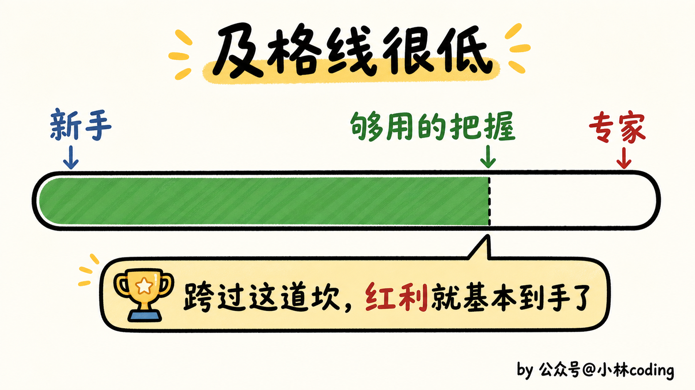
顺带说个有意思的趋势。
这半年里，大家拿 Claude Code 干的活也在悄悄变样：修 bug 的会话从 33% 掉到了 19%，运维相关的从 14% 涨到 21%，写作和数据分析直接翻倍，从 10% 涨到 20%。整体任务的价值，平均涨了 27%。
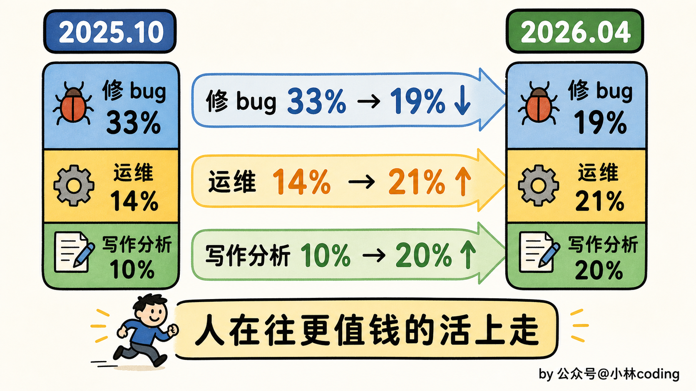
这说明 agent 正在从一个「帮你打补丁」的小工，变成能扛更值钱活儿的主力。而人呢，也顺势从埋头抠 bug，挪到了更靠近「想清楚要什么」的位置上。
这恰恰又绕回了那条主线：越往后，「懂行」越值钱。
写在最后
聊了这么多，最后落到实处。这份研究其实把「用好 AI 编程」该练的功夫，已经点得很明白了，就三件事。
第一，把问题说清楚。这不是让你写得多有文采，是把「要解决什么、有哪些约束」交代明白。还是那个秒杀的例子，「帮我写个扣库存接口」和「Redis 预扣加 Lua 原子扣减、再加限流防超卖」，根本是两个世界。后者多出来的每一句，都是你的架构判断，也都是 Claude 多替你干的活。
第二，把活拆好。一个大需求别囫囵丢过去。比如整个秒杀下单，懂行的人会先拆成几环：前面限流挡掉大部分请求、Redis 预扣库存、下单走 MQ 削峰、最后异步落库扣真实库存，然后一环一环让 Claude 实现。你拆得清楚，它执行起来才不跑偏，哪一环出问题你也立马定位得到。
第三，会验收。它吐出来的代码对不对，你得有本事判断。前面那个「本地全绿、一并发就超卖」的坑，就是靠你心里有杆秤、知道得上压测才拦下来的。AI 说这段没问题，你不能它说行你就信，得让它把并发、边界这些场景都给你交代清楚。
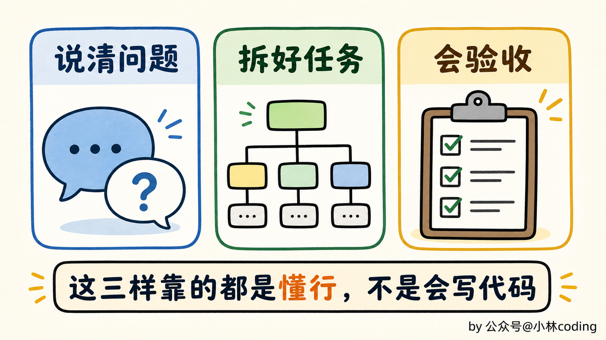
你发现没有，这三件事，没有一件是在考你的编码功底。考的全是你对这件事本身理解得够不够透。
所以回到开头那个问题。
同样一个 Claude Code，为什么有人用得开了挂、有人却觉得它笨？
我一开始以为差在会不会写代码，现在答案很清楚了：差的根本不是这个。
差的是你懂不懂行。哪怕你不是科班、写不出几行像样的代码，只要你在某件事上比 AI 更懂门道，这波红利照样有你的份，而且可能比你想的还稳。
因为这个时代真正稀缺的护城河，已经不是你会背多少语法、记多少 API 了，那些 agent 比你熟得多。
稀缺的是，你在某个领域里，比 AI 更懂这件事本身。
今天分享就到这，我们下一篇见！
参考资料：
- Anthropic 研究《Agentic coding and persistent returns to expertise》：https://www.anthropic.com/research/claude-code-expertise